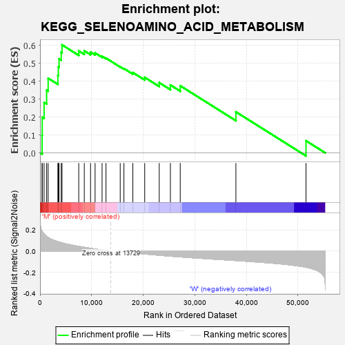
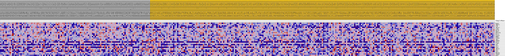
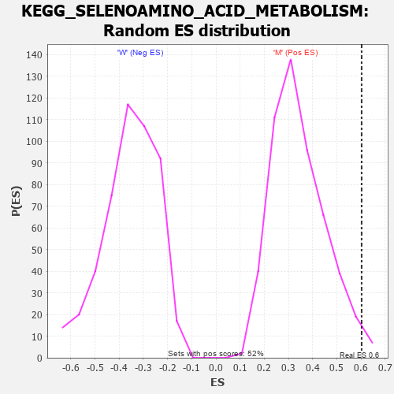

| Dataset | MUC16.MUC16.cls#M_versus_W.MUC16.cls#M_versus_W_repos |
| Phenotype | MUC16.cls#M_versus_W_repos |
| Upregulated in class | M |
| GeneSet | KEGG_SELENOAMINO_ACID_METABOLISM |
| Enrichment Score (ES) | 0.60287833 |
| Normalized Enrichment Score (NES) | 1.7502214 |
| Nominal p-value | 0.019305019 |
| FDR q-value | 0.07700874 |
| FWER p-Value | 0.385 |

| PROBE | DESCRIPTION (from dataset) | GENE SYMBOL | GENE_TITLE | RANK IN GENE LIST | RANK METRIC SCORE | RUNNING ES | CORE ENRICHMENT | |
|---|---|---|---|---|---|---|---|---|
| 1 | MARS2 | na | 402 | 0.187 | 0.0966 | Yes | ||
| 2 | TRMT11 | na | 429 | 0.184 | 0.1986 | Yes | ||
| 3 | CTH | na | 789 | 0.161 | 0.2816 | Yes | ||
| 4 | AHCYL2 | na | 1280 | 0.139 | 0.3500 | Yes | ||
| 5 | LCMT1 | na | 1574 | 0.129 | 0.4166 | Yes | ||
| 6 | MAT2B | na | 3458 | 0.090 | 0.4322 | Yes | ||
| 7 | BUD23 | na | 3551 | 0.088 | 0.4796 | Yes | ||
| 8 | METTL2B | na | 3685 | 0.086 | 0.5251 | Yes | ||
| 9 | MAT2A | na | 4107 | 0.081 | 0.5622 | Yes | ||
| 10 | PAPSS2 | na | 4265 | 0.078 | 0.6029 | Yes | ||
| 11 | HEMK1 | na | 7503 | 0.045 | 0.5693 | No | ||
| 12 | PAPSS1 | na | 8577 | 0.036 | 0.5700 | No | ||
| 13 | AHCY | na | 9795 | 0.026 | 0.5626 | No | ||
| 14 | SEPHS1 | na | 10671 | 0.020 | 0.5579 | No | ||
| 15 | MAT1A | na | 12026 | 0.011 | 0.5394 | No | ||
| 16 | LCMT2 | na | 12785 | 0.006 | 0.5289 | No | ||
| 17 | CBS | na | 15540 | -0.002 | 0.4805 | No | ||
| 18 | SCLY | na | 16259 | -0.006 | 0.4710 | No | ||
| 19 | GGT6 | na | 17990 | -0.016 | 0.4483 | No | ||
| 20 | AHCYL1 | na | 20286 | -0.026 | 0.4215 | No | ||
| 21 | GGT7 | na | 23102 | -0.039 | 0.3920 | No | ||
| 22 | GGT1 | na | 25267 | -0.047 | 0.3790 | No | ||
| 23 | METTL6 | na | 27172 | -0.054 | 0.3747 | No | ||
| 24 | SEPHS2 | na | 37959 | -0.089 | 0.2288 | No | ||
| 25 | GGT5 | na | 51542 | -0.152 | 0.0674 | No |

